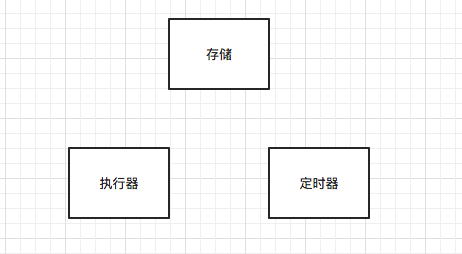
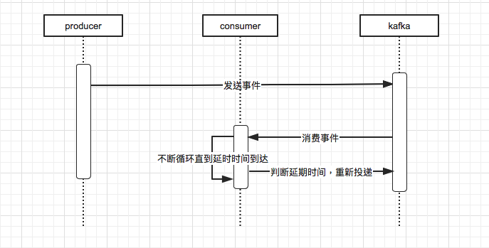
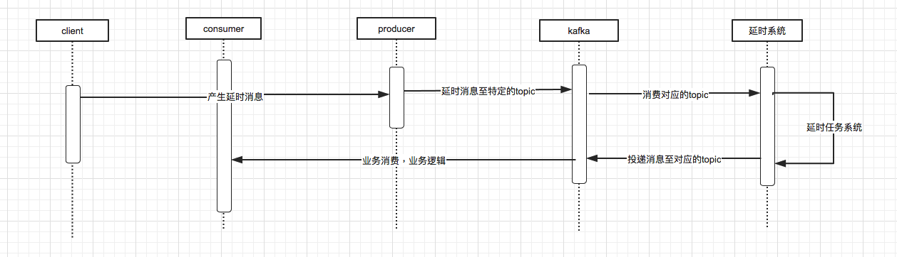
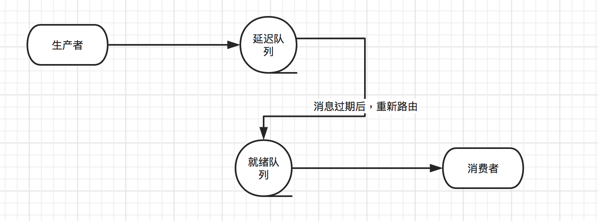
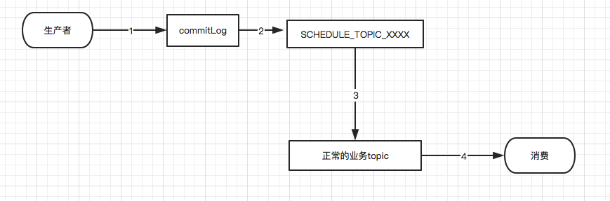

Java延时任务方案
背景
延时任务在日常业务中的使用是比较常见的。例如对于电商而言常见的场景：
- 当订单一直处于未支付的状态，需要在一定时间后关闭订单，退还库存。
- 订单完成15天后未评价自动评价等等…
对于我们目前的业务而言，主要的应用场景是与外部系统接口的对接使用上，例如风控、大数据、信审等系统（大部分都是异步逻辑，调用 -> 等待回调）。因为我们要保证流程最大成功率的流转（当然谁也没法保证100%的成功），防止用户流程停滞产生卡单。但是由于网络环境的不可控性，短时间内可能存在波动，如果使用简单的立即重试逻辑，经常出现连续的失败，且可能对目标系统产生一定的负载压力。对此种情况，可能简单的延时30秒后重试就成功了。所以延时任务的需求就出来了，那么有哪些常见的方案呢？
概要

我个人的理解是三个模块，当然这只是最核心的东西。
存储：保存任务的相关信息，常见的保存数据ID、重试次数、重试时间等信息
定时器：用于计时，判断任务是否到达时间
执行器：用于执行延时到期后相关的任务
方案分析
1. 线程池
我们可以使用CompletableFuture + 自定义线程池 + sleep(time)组合，对此可以实现简易的延时操作。
优点：
- 最为简单，均为
Java内置提供的操作，无附件组件
缺点：
- 线程池和
sleep操作，不适用于长时间的延时任务 - 与业务具体逻辑基本绑定，中间状态无法保证（需要注意处理系统重启之类的问题）
- 数据在内存中，需要根据业务使用调整，否则容易造成OOM之类的问题
- 任务无法手动管理
2. DelayQueue
JDK自带的一个无界阻塞队列，自带方案，无附加成本，但是业务优缺点实际与上述线程池方案差不多，需要考虑自身业务使用。另外不像线程池可以设定队列大小，这个为无界队列，突发数据量容易造成OOM。
3. 数据库
增加单独的数据表或者扩展已有的表数据，记录任务的重试时间、重试次数等数据，然后线程定时扫描表数据，取出符合条件的数据放入到执行队列或者线程池中进行处理。
优点：
- 简单，数据库基本为必备系统，扩展压力小
- 相对上面的方案，任务可以进行管理，有必要可以手动修改处理
缺点：
- 定时任务扫描表数据，粒度过小，对数据库负载压力大；粒度过大，任务延时精度较差，存在一定的偏移误差
- 多实例节点获取数据，需要考虑并发扫描加锁之类的限制，避免重复执行等操作
4. Redis
得益于Redis的高性能以及自身的持久化方案，对于数据库方案的缺点，Redis基本可以进行替代形成一个高效的方案。
（1）zset
有序集合是Redis提供的一种数据结构，具有set和hash的特性，每个key是唯一的，也能够类似hash一样通过key取到对应的value。每个对应的value也称为score，值限定为浮点数，并且数据是以这个score进行排序。
基本实现方案：
- 将延迟任务放进对应的
zset数据中，key可以为数据ID或者UUID，value设置为对应的过期时间。若为UUID，还需另外单独设置key为相同的UUID，值为具体数据或者是数据ID的缓存。 - 启动一个线程，定时的使用
ZRANGEBYSCORE方法获取符合条件的数据 - 若存在数据，则添加到相关的任务至执行队列中；然后移除这个任务
- 否则，休眠一段时间后重新尝试拉取对应的数据
优点：
- Redis基本也是必备系统，额外开销小，还可以带来较好的性能体验
缺点：
- 定时任务的粒度，无法保障过小的延时粒度，否则对于Redis本身是一种压力；但对比数据库方案，性能空间更大
- 对Redis使用上有存储性质，数据的丢失与否依赖于Redis的备份方案，存在丢失的可能性
- 分布式场景处理不当容易引起多个节点读取到相同的任务（分布式锁、lua脚本原子操作）
目前这个方案在社区中使用还是较为成熟的，下面是看到的两个样例：
有赞方案
有赞在他们的博客上有文章介绍过他们内部延迟队列的设计方案，具体可以查看 有赞延迟队列设计 ，下面是复制的一个他们的设计架构：

图上可以看出，整个延迟队列分为了4个部分：
- Job Pool：用来存放所有Job的元信息。
- Delay Bucket：是一组以时间为维度的有序队列，用来存放所有需要延迟的／已经被reserve的Job（这里只存放Job Id）。
- Timer：负责实时扫描各个Bucket，并将delay时间大于等于当前时间的Job放入到对应的Ready Queue。
- Ready Queue：存放处于Ready状态的Job（这里只存放Job Id），以供消费程序消费。
Delay Bucket内部核心就是使用了Redis的zset数据结构，Job Pool类似上面所说的数据缓存，整体的核心逻辑是一致的，只是针对业务需求对架构进行了相关的扩展，丰富和提升了可用性。
美图方案
美图也有一个相关的开源项目，基于Redis实现的任务队列，整体的架构如下图：

使用golang开发，整体的核心逻辑和有赞的方案看起来类似，扩展了各种方便业务的操作接口，作为一个单独的服务存在，有兴趣的可以自行查看下。
(2) expire event
Redis从 2.8.0 版本开始，提供了键空间消息（Redis Keyspace Notifications）的功能，其中就包含了键过期的事件，触发事件后会向特定的channel推送一条过期事件消息。我们可以利用这个特性，配合Pub/Sub机制就可以完成一个简单地延时任务系统。主要的步骤如下：
- 需要修改Redis的配置
notify-keyspace-events Ex，开启相关功能。具体配置含义可以查看相关文档 - 业务中使用
Redis订阅相关的channel（__keyevent@0__:expired） - 订阅后有事件会触发，然后执行我们编写的逻辑
优点：
- 利用了Redis提供的相关功能，直接省略了定时器的业务逻辑，简化逻辑
缺点：
- Redis本身提供的
Pub/Sub机制是不可靠的，即发即废模式，客户端的断连等会直接导致消息的丢失
另外查看过期事件触发时机的文档信息可以了解，过期事件不是完全按照设定的过期时间触发的，具体查看下面文档：
Timing of expired events
Keys with a time to live associated are expired by Redis in two ways:
- When the key is accessed by a command and is found to be expired.
- Via a background system that looks for expired keys in background, incrementally, in order to be able to also collect keys that are never accessed.
The
expiredevents are generated when a key is accessed and is found to be expired by one of the above systems, as a result there are no guarantees that the Redis server will be able to generate theexpiredevent at the time the key time to live reaches the value of zero.If no command targets the key constantly, and there are many keys with a TTL associated, there can be a significant delay between the time the key time to live drops to zero, and the time the
expiredevent is generated.Basically
expiredevents are generated when the Redis server deletes the key and not when the time to live theoretically reaches the value of zero.
而相关过期的逻辑操作说明如下：
How Redis expires keys
Redis keys are expired in two ways: a passive way, and an active way.
A key is passively expired simply when some client tries to access it, and the key is found to be timed out.
Of course this is not enough as there are expired keys that will never be accessed again. These keys should be expired anyway, so periodically Redis tests a few keys at random among keys with an expire set. All the keys that are already expired are deleted from the keyspace.
Specifically this is what Redis does 10 times per second:
- Test 20 random keys from the set of keys with an associated expire.
- Delete all the keys found expired.
- If more than 25% of keys were expired, start again from step 1.
This is a trivial probabilistic algorithm, basically the assumption is that our sample is representative of the whole key space, and we continue to expire until the percentage of keys that are likely to be expired is under 25%
This means that at any given moment the maximum amount of keys already expired that are using memory is at max equal to max amount of write operations per second divided by 4.
- Redis的过期事件是 当键被删除时触发保证 的，但是过期键的删除操作具体时间是不可保证的，存在延时的可能性。
从文档角度分析来看，实际第二点产生的影响相对会比较小，因为后台线程频率比较高，延时误差不会太大；但是消息的丢失实际是不可接受的，如果后续Redis能够提供一个可靠的 发布/订阅 机制，那这个方案的实用性会大大提升。
消息队列
当你的系统已经使用了消息队列时，那我们可以依赖现有的系统进行一波操作实现特定的延时队列逻辑，但是如果为了单纯的延时队列任务而去引入一个消息队列系统，可能代价会比较高，上面的方案也许更靠谱。下面说下主流的三个消息队列平台上的方案，仅为个人主观意见。
(1) Kafka
我们目前系统中使用的就是Kafka这个消息队列平台，但是Kafka本身是不带有延时队列的功能，所以只能“曲线救国”。目前有看到过两种方案去达到延时任务的目标。

第一种方案就是类似上面的时序图，实际上没有增加额外的开发工作，只是增加了额外的延时判断逻辑。
- 生产者投递的消息增加延时时间参数，也可以补充重试次数之类的参数
- 消费者消费对应的消息，判断延时时间是否已经过期，否的话则把消息重新投递到Kafka等待再次消费
- 不断的循环上述操作直至延时消息被成功消费
这个方案的优点就是基于消息队列的特性，所有的消息队列系统都可以使用，只是简单的增加延时逻辑判断即可；但是缺点也是极其明显的，在一定时间内这个延时任务的消息会不断的消费再重新投递，产生大量的重复数据，相对来说如果是一个短时间的延时，或许是一个可以接受的方案。另外这个也无法保证延时任务的精度，依赖于队列消费情况。
第二种的话就是基于Kafka的业务架构上进行一定的开发工作，增加一个延时任务系统。比较好的是增加特定的topic，然后延时任务系统消费这个topic消息，在延时任务过期后系统重新投递至消息对应的topic，由业务进行消费处理，一个大致的时序图如下：

而对应的延时任务系统的设计，你也可以采用上述Redis的方案或者后续介绍的时间轮等更为复杂的方案。目前在网上看到一篇基于Kafka进行扩展的架构介绍（延时消息队列），有兴趣可以查看了解一下。
(2) RabbitMQ
RabbitMQ本身也不支持延时任务，但是可以通过它本身的一些特性，死信以及死信路由实现相关的功能。
死信：
- 消息被消费者拒绝，并且参数设定requeue=false，确保不会重新放进队列
- 消息已经过期
- 队列达到了最大长度
RabbitMQ中可以对队列以及消息设置x-message-tt和expiration参数来控制消息的存活时间。如果超时，消息将会变为死信，不会被消费者消费到。单靠死信还不能实现延迟任务，还要靠Dead Letter Exchange。
死信路由：
RabbitMQ可以对队列设置x-dead-letter-exchange和x-dead-letter-routing-key两个参数。当消息在一个队列中变成死信后会按照这两个参数进行路由，消息就可以被重新分配消费。
操作过程：
- 创建延迟队列（设置死信路由）
- 创建就绪队列
- 创建死信路由
- 绑定死信路由与就绪队列
- 发送延时消息
- 消息过期后进入就绪队列，被业务消费

优点：
- 基于RabbitMQ本身的特性，可以有效的利用RabbitMQ的分布式、数据持久化等自带的功能保证，减少了许多额外开发
缺点：
- 一个消息比在同一队列中它前面的消息提前过期，前面的消息没有出队，提前过期的消息也不会优先进入死信队列。
- 不支持对已发送的消息进行管理
对于第一点这个问题，可以采用下面介绍的RocketMQ的方式，设定不同的延时级别，分别为此创建单独的消息队列，虽然略微麻烦，但是也是一个不错的方案，可以满足一定的延时任务需求。
另外除了上面介绍的方案外，实际RabbitMQ官方提供了一个插件扩展来实现延时任务的功能，但是呢这个我具体没有研究过就不讲解了，有兴趣的可以自行了解下，不过是用Erlang语言开发的，存在一定的门槛。
(3) RocketMQ
Apache RocketMQ是阿里开源的一款高性能、高吞吐量的分布式消息中间件。其中开源版本支持了18个级别的延时时间（1s 5s 10s 30s 1m 2m 3m 4m 5m 6m 7m 8m 9m 10m 20m 30m 1h 2h），这些对于偶尔使用的业务来说已经可以满足需求了，例如对于我们这种主要场景在于延时重试，时间级别优先级并不高。下面看下大致的流程：

- 生产者产生一条消息，设置delayLevel参数。如果delayLevel大于0，表明这是一条延时消息，在提交commitLog之前Broker会替换掉消息原来的
topic以及queueId。 - 备份消息原来的
topic以及queueId，使用延时消息特定的topic（SCHEDULE_TOPIC_XXXX）以及对应的queueId（延时级别 - 1）进行写入 - 每个延时队列有个单独的定时器（DeliverDelayedMessageTimerTask），每秒拉取已经到期需要执行的消息
- 从commitLog中获取具体的消息，恢复消息原来的topic、原队列id，清除delayLevel后重新投递，等待消费者消费
这是RocketMQ开源版本的大致逻辑，如果只是简单的需求，你可以自己定制一下再增加几个延时级别队列也是没有问题的。但如果是复杂的支持任意延迟的需求呢？阿里云上提供的消息队列就是支持 **40 天内的任何时刻（单位毫秒）**延时功能，所谓的加钱可得。而它是商业产品，我们看不到具体实现方案，但是社区中也存在相关的方案可以实现类似的效果，当然这里只是介绍下核心思想，商业产品还包含了很多其他的东西，不只是实现就好。
时间轮
支持任意延迟的消息队列，意味着需要对任务按照延时时间在服务端进行排序。例如先是产生了一个延时1分钟的消息，然后过了几秒又产生了一条延时5秒的消息，显然延时5秒的消息需要先投递出去。所以在一个新的延时任务进来后，需要对任务按照延时时间进行重新排序。
但是排序算法的时间复杂度是已知的，而类似于堆排序的插入时间复杂度也有O(logn)，在一个海量的数据以及较低的延时时间背景下，投递一个消息后重新排序的时间可能会远大于延时时间。在上面开源版RocketMQ中，通过设定固定的延时级别，将插入排序操作转换成了O(1)的append操作，完美避开了排序的问题。那么在实现任意延时的方案中，最好也有类似的操作可以避免掉排序操作，从而提升效率。
所以就要提到时间轮这个数据结构，具体是在《Hashed and hierarchical timing wheels: efficient data structures for implementing a timer facility》这篇论文中，里面详细比较了实现定时器的各个数据结构，并提出了层次化的时间轮等新的结构。下面看下大致的结构特征，这里借用了网络上的图片：

这张图在时间轮的文章中几乎到处都是，从图上我们可以大致看出：
- 箭头按照一定方向以固定的频率移动（如手表指针），每一次移动称为一个tick。ticksPerWheel表示一个定时轮上的tick数。每一格后面挂载着需要执行的任务。
当我们设定最大的延时区间以及对应的延时精度后，我们就可以规划出对应的时间轮。以上面阿里云的数据举例，支持40天的最大时间，精度为1秒，则对应的ticksPerWheel = 40 * 24 * 60 * 60（3,456,000），这样子就可以对应到40天内任意的秒级延时。但是呢这个数据值过于庞大，中间过多的指针空转都是次要的，在内存中构建如此庞大的数据结构是不可接受的，于是又有了对应的优化方案——层级时间轮。

如上图所示，对时间轮按照一定的层级进行拆分，从而缩小每个时间轮的大小。每一层的时间轮插槽表示范围在扩大，随着时间的流逝，高层时间轮中的定时任务会降级重新插入低层的时间轮，直到触发为止。
大致的概念是这样的，具体的细节原理就不介绍了，感兴趣的可以自行搜索一下，相关的文章极其多。时间轮的应用也是极其的广泛，像Netty中就有HashedWheelTimer的实现，而Kafka中也有多层时间轮的实现。当然传统的时间轮也是存在一些问题的。
- 基于内存操作，当数据量过大时，层级时间轮挂载的任务数过多，全部加载依旧会占用大量的内存
- 当tick较小（类似Kafka中tick为1ms），底层时间轮任务较少时，时钟轮转大部分空转，效率会比较低
针对存在的问题，也出现了各种时间轮的变体实现方案，对于某些方面进行了一定的优化用于提升性能或者效率。类似于Kafka通过结合DelayQueue来协助推进时间轮，而不是简单的时钟轮转推进，避免低效等等。
总结
上面介绍了多种我所知的方案，当然也只是方案，没有深入具体的细节原理以及实际场景需要解决的各类问题，另外也许还有其他的方案需要你自行探索，欢迎指出。其中每一个方案都有着自身的优缺点，例如数据库方案对于高精度延时任务是比较难以掌控的；Redis方案存在数据丢失的可能性；消息队列则引入了额外的系统，带来了运维等其他的复杂度；时间轮虽然数据结构极其优秀，但是基于内存，数据持久化以及大数据量内存占用等都需要进行结合其他的操作进行优化。
总而言之，每一个方案有好有坏，需要结合自身的业务以及现有项目的基础架构选出适合自己的方案，没有银弹。最终大部分的最终方案是结合多个方案优化构建而成的，考虑自身业务以及预留了未来的扩展空间，达到一个均衡的效果。